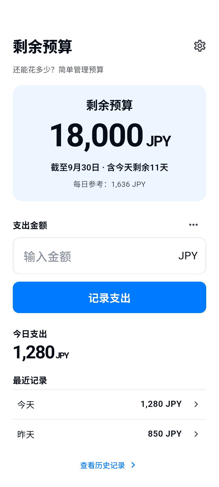

设置预算金额、期间和币种。

使用方法
花费、记录、查看剩余。
在首页记录支出，备注为可选项。
在历史记录中修改、删除记录或添加退款。
手动开始下一期预算，原有预算保留在历史中。
只保留必需功能
一个预算，清晰掌握。
- 剩余预算
- 剩余额仅基于已记录的数据，不是银行余额，也不保证可以花费该金额。退款用于恢复预算，不是收入管理。预算不会自动续期或结转。
- 6种语言 · 8种币种
- 日本語 / English / 한국어 / 简体中文 / Español / Français
JPY / USD / EUR / KRW / CNY / GBP / CAD / AUD - 广告与隐私选项
- 应用免费，首页底部仅显示一个小型横幅广告。输入或编辑时隐藏广告。必要时可在设置中更改隐私选项。同意或网络失败不会阻止记录支出。
本机记录
无需账号。
预算金额、币种、期间、支出、退款、备注和设置保存在本机，用于提供应用功能。无需账号，也没有自建云同步。我们不将这些记录发送至我们的服务器或广告SDK，也未添加分析SDK。
数据保存在本机。系统备份或设备迁移可能包含这些数据，但不保证恢复。删除应用可能导致数据丢失。没有账号或云端恢复服务。
隐私政策 →